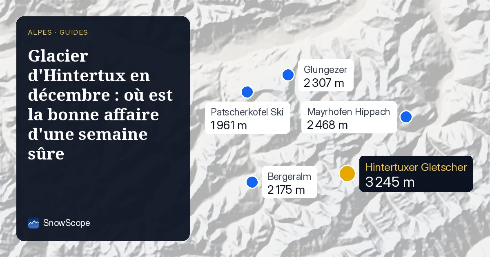

Glacier d'Hintertux en décembre : où est la bonne affaire d'une semaine sûre
La question de la neige à Hintertux est réglée : un 15 décembre type, le sommet (3 245 m) affiche 98 cm, et la semaine du 15-21 décembre, tous les hivers des 46 dernières années ont eu 30 cm ou plus à cette altitude. Le vrai choix porte sur le prix et le terrain qui correspondent à votre semaine.
Consultez les prévisions neige en temps réel pour Hintertuxer Gletscher sur l'application SnowScopeHauteurs de neige, alertes poudreuse et carte 3D, gratuitement.
Du sommet à mi-pente : la neige est fiable
À mi-pente (2 372 m), un 15 décembre type affiche 52 cm. La semaine du 15-21 décembre, 87 hivers sur 100 ont eu 30 cm ou plus ; à la semaine de Noël ce chiffre monte à 93 sur 100. Même une année pauvre (1 hiver sur 10) laisse 44 cm au sommet le 15 décembre, et l'hiver dernier, plus faible que la moyenne, en a encore livré 44 cm.
La neige au sommet reste épaisse parce qu'elle tombe tôt. Le premier jour avec 30 cm de couverture au sommet est le 29 septembre ; à mi-pente c'est le 23 octobre. En décembre, le glacier a des mois d'accumulation sur lesquels compter.


Le problème de la vallée en décembre
La station de base se situe à 1 500 m, où décembre est maigre. Un 15 décembre type affiche seulement 16 cm, et seulement 7 hivers sur 100 ont eu 30 cm ou plus la semaine du 15-21 décembre. Le premier jour habituel avec une couverture suffisante pour skier en sécurité à la vallée est le 7 janvier.
En décembre à Hintertux, vous prévoyez de skier la moitié supérieure et d'utiliser les remontées pour descendre. Les pistes basses sont un bonus si la neige est plus abondante que d'habitude, pas le plan.
Prix : tarif unique, pas de réduction en décembre
Un forfait journée adulte coûte 82 EUR toute la saison ; un forfait 6 jours coûte 399 EUR. Il n'existe pas de tarif moins cher avant Noël, donc décembre coûte autant que février. C'est différent des stations qui pratiquent un tarif début de saison.
L'économie se fait en famille : les enfants nés après le 1er janvier 2021 accèdent gratuitement aux remontées avec un adulte (une pièce d'identité est nécessaire). Pour une famille avec un jeune enfant, ce changement est plus important que n'importe quel tarif saisonnier.
Comment cet hiver se compare avec le passé
La neige de décembre au sommet s'est maintenue régulière sur 46 hivers : la moyenne était de 95 cm les 15 premiers hivers et de 101 cm les 15 derniers. Le glacier tient sa promesse en décembre. À mi-pente le tableau est différent : la moyenne de décembre a baissé de 54 cm les 15 premiers hivers à 45 cm les 15 derniers.
Cette tendance a de l'importance si vous voulez skier les pistes supérieures toute la semaine. Mi-pente était plus fiable par le passé, mais elle reste au-dessus de la limite de confort de 30 cm la plupart des années.
Hintertux comparé au Kitzsteinhorn
Le Kitzsteinhorn au-dessus de Kaprun est la comparaison de glacier la plus proche. Les deux facturent 82 EUR pour un forfait journée en haute saison. Le 15 décembre type, le Kitzsteinhorn affiche 137 cm à son sommet (3 024 m), mais seulement 40 cm à mi-pente (1 894 m). Hintertux affiche 52 cm à mi-pente pour le même prix de forfait.
Pour un forfait 6 jours en décembre, Hintertux coûte 399 EUR contre 440 EUR au Kitzsteinhorn. Si vous voulez skier les pentes intermédiaires une semaine en décembre, Hintertux offre plus de neige et un meilleur rapport qualité-prix.
Quand réserver ce glacier
Choisissez Hintertux si vous avez une semaine fixe en décembre, que vous ne pouvez pas changer vos dates et voulez la certitude au sommet. Les chiffres soutiennent ce choix. Si vous pouvez attendre une bonne prévision ou décaler votre semaine, une station en village d'altitude avec un tarif début de saison peut coûter moins cher et vous offrir plus de variété.
Conseils aux skieurs
- Prévoyez de skier à partir d'environ 2 372 m vers le haut en décembre ; utilisez les remontées pour descendre. Les pistes de la vallée sont rarement skiables en décembre.
- Apportez une preuve de naissance pour les enfants nés après le 1er janvier 2021 ; ils skient gratuitement avec un adulte (pièce d'identité obligatoire).
- Décembre à 3 245 m est froid et souvent venteux. Prévoyez un masque facial, des gants de rechange et des chaufferettes.
- Le ski hors-piste sur un glacier signifie des crevasses cachées ; n'y allez qu'avec un guide et consultez le bulletin officiel d'avalanches de Avalanche.report – Euregio Tyrol.
À propos de ces chiffres
Les hauteurs de neige des stations sont la neige la plus épaisse sur le haut du domaine à la date indiquée ; ce sont des estimations pour une zone, pas une mesure en un point. Les prévisions peuvent changer. Consultez toujours le bulletin d'avalanche officiel avant le hors-piste.
Bulletins d'avalanche officiels: Avalanche.report – Euregio Tyrol
Citer ce bulletin
Pour la recherche, l'enseignement ou la presse : chiffres et graphiques réutilisables librement sous CC BY 4.0 avec cette citation.
SnowScope (2026), Glacier d'Hintertux en décembre : où est la bonne affaire d'une semaine sûre, https://snowscope.app/blog/fr/2026/11/hintertux-glacier-december-value-ski-week.html, consulté le 2026-11-14
SnowScope (Atlas Labs). (2026, November 14). Glacier d'Hintertux en décembre : où est la bonne affaire d'une semaine sûre. SnowScope snow reports. https://snowscope.app/blog/fr/2026/11/hintertux-glacier-december-value-ski-week.html
BibTeX
@misc{snowscope2026hintertuxglacierdecember,
author = {{SnowScope (Atlas Labs)}},
title = {Glacier d'Hintertux en décembre : où est la bonne affaire d'une semaine sûre},
year = {2026},
month = nov,
howpublished = {\url{https://snowscope.app/blog/fr/2026/11/hintertux-glacier-december-value-ski-week.html}},
note = {Published 2026-11-14 13:29 UTC; accessed 2026-11-14}
}· CC BY 4.0 · Méthodes, données et outils →
Suivre Hintertuxer Gletscher
Gratuit : un message quand la neige arrive, et la météo chaque matin.